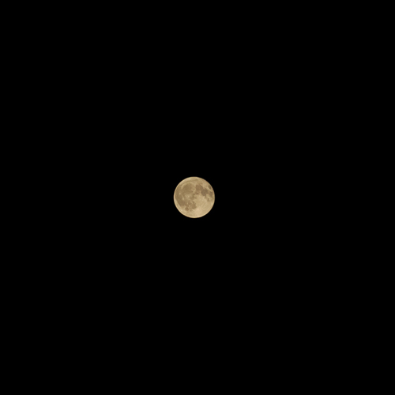

A photo I took when I was relaxing at the river that cross around my hometown
One day i was bored so i tried macro on my Cannon camera. So i took stuff from my PotPourri bowl


My friend was taking a photo for his friend, so i took a photo of him. Photo-ception?
Lazy part of a pine relaxing on the riverside


The original was less blue-ish, yes it's heavly edited
My first attempt to do a night sky shot, it's bad but it's my only one


The moon in the lightday
The morning fire after a camping trip


Just a bored, photogenic cow
One of my favorite photo because apples

Just a River
Sometimes the simple things in countryside life amaze me
This photo is made from 2 shots put vertically and edited with the colors i liked


Our city is surrounded by nature and places where you can relax. Here I was at one of my favorite places and they were hosting an event. You can see that place here
In my vacation to Bulgaria I took only one photo with my camera. And I'm pretty proud of it
{kind=link}
{kind=link}
{kind=link}